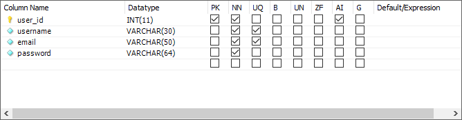
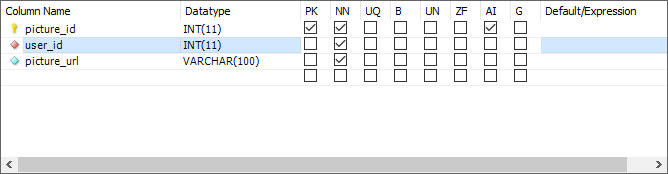

Xiaofeng Qu & Bryce Hendricks
As shown in the above graph. The user first goes to the homepage (index.php). If the user is registered, he can directly login the system. If the user is not registered, he can register an account and then login. After the user logins, the website will direct the user to the upload landing page, so the user can upload textures. If the user does not want to upload any texture, he can click the Start designing link and go to his design page. The design page will load all the user’s textures based the database’s records and display them in the design page. If the user upload some textures, the design page will store the textures into the server’s file system and store the textures information in database. Then, the design page will load all the user’s textures and display them in the design page. The user can drag their textures into the canvas and the texture will be apply to the 3D WebGL objects. The web application also has the ability to detect whether the user is logged in or not. If a user is not logged in, he can only visit the homepage. If a user is logged in, the homepage will always redirect the user to the upload page. In the back-end, JavaScript is handling events and WebGL is generating shapes, textures, and animations. The application is a highly interactive event driven construct. If time allows we plan to add a database that will store user information and the textures that they have uploaded.
Database design is simple for this project.
User table
Picture table